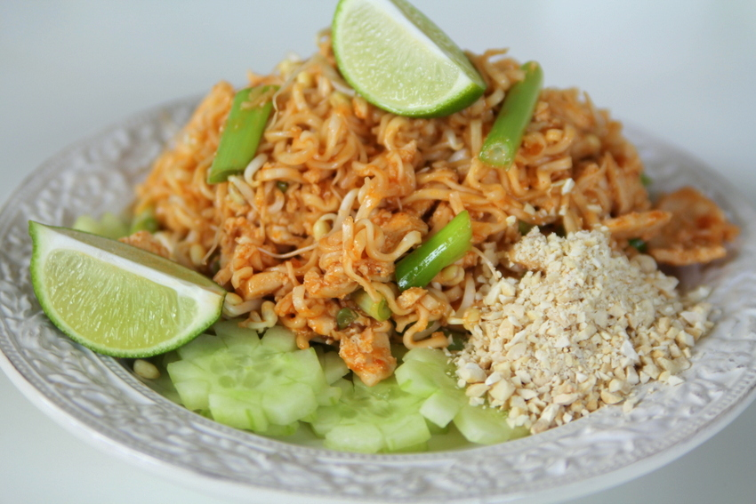

Pad Thai
Recept
Snabb, enklel och allra viktigast - supergod Pad Thai!
Du behöver:
- 1 kg kyckling
- 2 Santa Maria pad thai sås
- Sojasås
- A few tablespoons of soy sauce
- 2 paket risnudlar
- En morot/vitkål mix
- 1 purjolök
- Limekoncentrat
- 2 ägg
- Jordnötter
Gör så här
- Skär purjolöken och krossa jordnötterna med mortel
- Skär kycklingen i små bitar
- Koka upp vatten till risnudlarna
- Stek kycklingen i olja på hög värme tills den är klar
- Medan kycklingen steker, börja koka risnudlarna enl förpackning
- Släng i alla grönsaker och rör om på mediumvärme ca 2 minuter
- Klipp sönder nudlarna och lägg i stekpannan med resten
- Knäck 2 ägg
- Häll i pad thai sås och soja
- Servera med lime och jordnötter